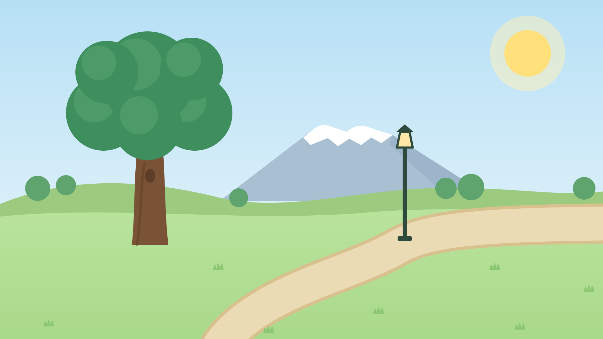
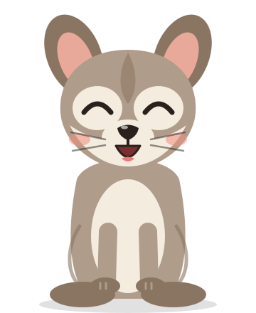
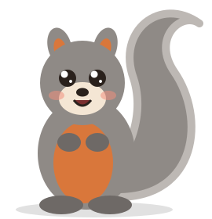
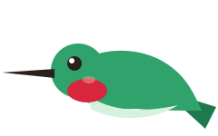
¡Jugar!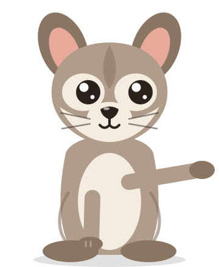
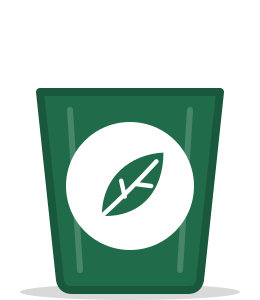
Orgánico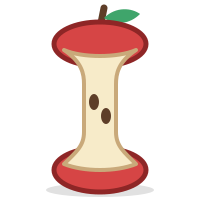
el corazón de manzana✓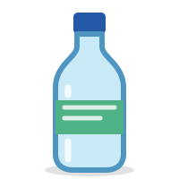
la botella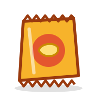
las frituras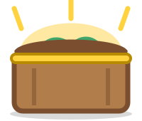
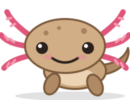
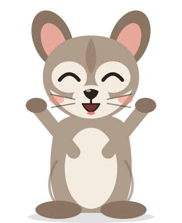
¡Sigamos!Tres formas de hacer el juego más llamativo en el proyector y en la tableta. En las tres, Mixtle, el parque, los residuos, los botes y el cofre son los dibujos reales del juego. Cambian el logo, la paleta, la tipografía y la decoración. Hay que elegir una (o decir qué tomar de otra).
Qué es real y qué es propuesta. Las ilustraciones salen del código del juego (src/arte/, exportadas con npm run docs:direccion). Los botones, las tarjetas, la barra de avance y el globo copian las proporciones de los componentes del juego (BotonGrande, Tarjeta, la barra de la lección) con los tokens de cada dirección. Así, cambiar de dirección es cambiar tokens, no rehacer pantallas. El logo, la racha, el sol de vitral, el papel picado y la ráfaga son propuesta. Las poses nuevas de Mixtle (colgado de la rama, con gorra, etc.) llegan en el paso siguiente. Las fuentes aquí vienen de Google Fonts; en el juego se incluirán dentro de la app (@fontsource, licencia OFL), para que funcione sin internet.
La evolución natural de la v2: un parque fresco y luminoso, verde y crema, letras redondas y gorditas. Tranquila, muy legible y familiar para Eco Urban.
Amable, ordenada, “de escuela bonita”. Las celebraciones son suaves: hojas que caen, rayos de sol, un brinco de Mixtle.
#1F6B4A · marca#123D2B · sombras#FFD23F · acentos#B84A14 · botón principal#D3EEF9 · fondos#FFF8E7 · tarjetas| Par | Uso | Contraste | Resultado |
|---|---|---|---|
| “¡Jugar!” en el botón | |||
| Texto de tarjetas | |||
| Palabra clave en el globo | |||
| “¡3 seguidas!” | |||
| Botones de sistema |
A favor
En contra
Energía de caricatura: colores de atardecer, contornos gruesos, todo parece una estampa recortada y los premios explotan en ráfagas. La más vistosa desde el fondo del salón.
Valiente, divertida, “de superhéroe del parque”. Los momentos importantes tienen ráfagas, tramado y letras inclinadas.
#1B1B3A · contornos#0B7F78 · marca#FFD23F · títulos#C8361B · botón principal#FFB347 · fondos#FFFAF0 · tarjetas| Par | Uso | Contraste | Resultado |
|---|---|---|---|
| “¡Jugar!” en el botón | |||
| Texto de tarjetas | |||
| Palabra clave en el globo | |||
| “¡3 seguidas!” | |||
| Botones de sistema |
A favor
En contra
El parque está de fiesta: papel picado, un sol de vitral (inspirado en los vitrales de Toluca, sin copiar el Cosmovitral), rosa mexicano, turquesa y cempasúchil. Mixtle cuelga del cordón del papel picado. Identidad local, festiva y cálida.
Alegre, de comunidad, “de feria del barrio”. Cada logro es una pequeña fiesta: papel picado, confeti de colores y el sol que gira.
#C4006A · marca#2E3A87 · botón principal#00A3A3 · racha y acentos#FF9F1C · premios#BFE6F2 · fondos#FFFAF2 · tarjetas| Par | Uso | Contraste | Resultado |
|---|---|---|---|
| “¡Jugar!” en el botón | |||
| Texto de tarjetas | |||
| Palabra clave en el globo | |||
| “¡3 seguidas!” (turquesa oscuro) | |||
| Botones de sistema |
A favor
En contra
| A · Parque de día | B · ¡Al rescate! | C · Fiesta del Nevado | |
|---|---|---|---|
| Qué tan llamativa en el proyector | Media | Muy alta | Alta |
| Calma para niñas y niños de 6 años | Muy alta | Media (hay que dosificar) | Alta |
| Identidad local (Toluca, Edomex) | Baja | Baja | Muy alta |
| Continuidad con lo que vio Eco Urban | Muy alta | Baja | Media (mismo dibujo, nueva fiesta) |
| Costo de rendimiento (60 fps, 8 GB) | Bajo | Medio (contornos dentro del SVG) | Bajo a medio (papel picado ligero) |
Recomendación: C · Fiesta del Nevado, con la energía de B solo en los momentos de premio (la ráfaga y las letras inclinadas cuando se abre el cofre). Da lo que pide la v3, más llamativo, sin perder la calma de los ejercicios, y es la única que hace que el juego se sienta de Toluca. Si Eco Urban prefiere no cambiar tanto, A es la opción segura.
TODO(René / Eco Urban): elegir la dirección (A, B o C, o una mezcla diciendo qué se toma de cada una).